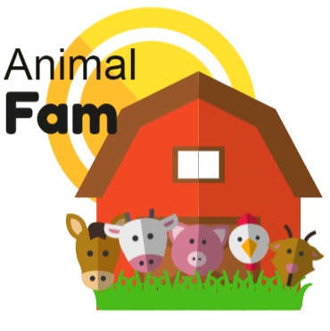

What is it?
Animal Fam is an interactive website for users to rant their frustrations by chatting with a variety of animal characters. Each animal has their own personality, increasing the variety of chats that users want to have. All the animals have their own characterized chatbot, and we currently support Chicken, Cow, Pig, and Horse chat. When a user types a message and enters it into the animal’s respective chat, the animal will respond to the message with a pun.
Platform
The product is completely free and is accessible to all individuals through the website: animalspam.com
Why is it important?
Throughout our daily lives, we are constantly facing frustrations. Sometimes we just don’t feel comfortable sharing our troubles with people around us, despite it being essential to our health. Animal Fam is a great and healthy way for us to alleviate stress. Animal Fam’s target audience are all individuals who wish to vent their frustrations or simplyrelax and have a short chat with unique and funny characters.
Future Goals
In the future, we want to add more characters and features to each animal chatbot. We also want to expand our audience by making an Animal Fam app.
Tools Used
Animal Fam was developed through the use of HTML, CSS, JavaScript, Bootstrap, LunaPic, and other various online design editing tools.
Creators
Esha Radhakrishnan, Kaitlyn Chan, Rochelle Tham, Donna Lai, Marinn Cedillo, Ashley Lin
